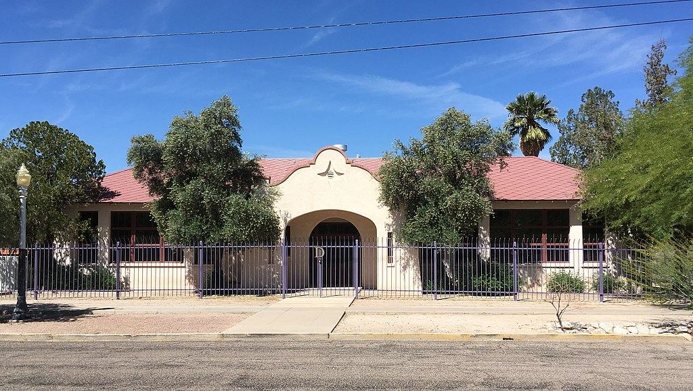

Welcome to the Dunbar Project Website
Dunbar school was completed in January 1918, for the purpose of educating Tucson's African-American students. The school was named after Paul Laurence Dunbar, a renowned African-American poet. African-American children in first through ninth grades attended Dunbar untill 1951, when a jure segregation was eliminated from the school systems of Arizona. When segregation in Arizona was eliminated, Dunbar school became the non-segregated John Springs Junior High School, and continued as such untill 1970 when the school was closed permanently